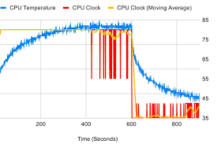

Análisis del CPU y Gestión Térmica

Arquitectura: Núcleos e IPC
- Cores vs Threads: El núcleo es físico; el hilo es lógico (Hyper-Threading) para paralelismo.
- Frecuencias: Base (mínima) y Turbo (máxima automática según carga).
- IPC: Capacidad de trabajo por ciclo. Un CPU nuevo a 3GHz rinde más que uno viejo a 4GHz por mejor IPC.
- Caché L1-L3: Memoria interna ultra rápida para datos inmediatos.
- iGPU: Gráficos integrados (Ej: Intel sin letra "F" o AMD con "G").

Sistemas de Enfriamiento
- Aire: Heat Pipes de cobre con cambio de fase de líquido a gas.
- Líquida (AIO): Bloque, bomba y radiador para CPUs de alto TDP.
- Pasta Térmica: Obligatoria para cubrir imperfecciones microscópicas y eliminar el aire aislante entre el IHS y el metal.

Límites y Técnicas de Usuario
- Thermal Throttling: Estrangulamiento de velocidad para proteger el silicio del calor excesivo.
- Overclocking: Aumento manual de GHz y voltaje (riesgo de degradación).
- Undervolting: Bajar voltaje manteniendo frecuencia; ideal para enfriar notebooks gaming.